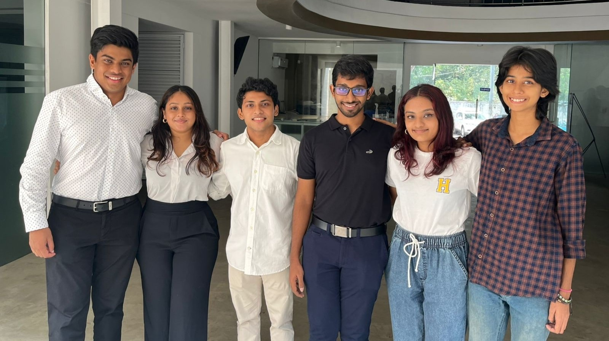
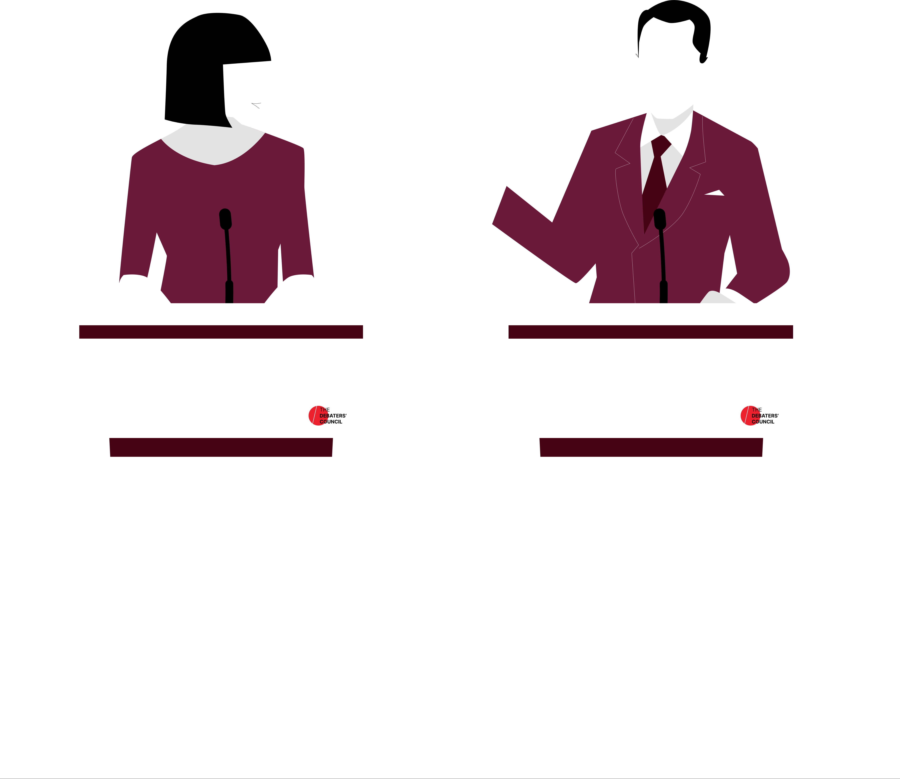

DEBATERS' COUNCIL SRI LANKA

About Us
The Debaters’ Council of Sri Lanka serves as a national level body that oversees English Debating in Sri Lanka at a secondary and tertiary level. It was established in 2006 as a society and registered as a company limited under guarantee in 2009.
What do we do?
The DC coordinates tournaments and provides support to schools and other tournament organisers to maintain an international standard of debating within the local circuit.
Additionally, the Debaters’ Council trains a selected group of top school debaters as a part of the National Pool of Debaters
out of which the team representing Sri Lanka at the World Schools Debating Championship is chosen, and trained.
Furthermore, the DC conducts various workshops in debating, judging, and coaching, as well as other programs in affiliation with the Ministry of Education
as part of its mission to uplift and advance English Debating in Sri Lanka.
